Приложение помогает рассчитать начальные размеры, подстроить собранную антенну и сохранить результаты измерений. Приложение работает на Android 8.0 и новее. Расчеты, модели и встроенные материалы доступны без интернета.
Расчет размеров и подстройка
Начальные размеры
- Откройте Расчет размеров и укажите частоту в выбранных единицах. Например, для диполя на 145,5 МГц введите 145,5 при выбранных МГц.
- В результатах найдите длину штыря или диполя. Для симметричного диполя проверьте отдельно полную длину и длину одного плеча.
- Если нужен запас на подстройку, учтите его, когда определяете длину заготовки. Сохраните расчет в проект через кнопку копирования.
Подстройка по резонансу
- Откройте Подстройка антенны и выберите штырь или симметричный диполь.
- Введите целевую и измеренную резонансную частоты, затем фактическую длину. Для диполя указывайте суммарную длину обоих плеч.
- Если измеренный резонанс ниже цели, приложение предложит укоротить антенну. Если выше, предложит удлинить. Для симметричного диполя меняйте оба плеча равномерно.
- Вносите небольшие изменения и измеряйте заново в том же положении антенны и при той же плоскости калибровки.
Введите резонанс, определенный по измерению. Если в рабочем окне несколько минимумов КСВ, сопоставьте их с графиком реактивности и выберите нужный режим антенны.
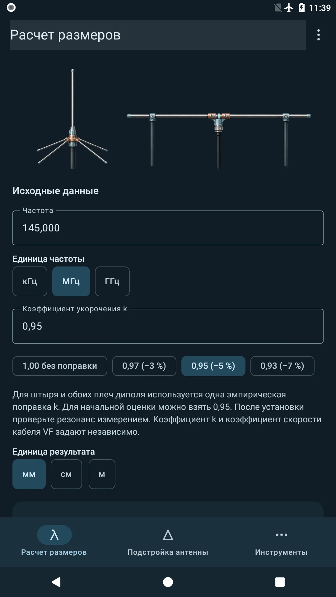
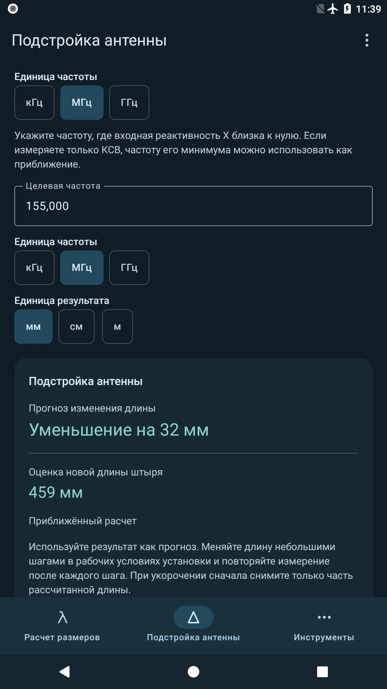
Калькуляторы антенн
Откройте Инструменты → Расчет параметров антенн. Выберите конструкцию или расчетный режим. Длины заготовок и габариты готовых деталей могут различаться после гибки и подрезки.
На экранах «Расчет параметров антенн» и «Конструирование антенн» удерживайте карточку и перетащите ее вверх или вниз. Порядок сохраняется отдельно для каждого списка.
Если результат пуст, проверьте единицы и допустимый диапазон полей.
| Калькулятор | Что сделать |
|---|---|
| Диполь «Перевернутая V»Диполь «Перевернутая V» | Задайте рабочую частоту, чтобы получить начальные размеры, либо введите измеренную длину плеча, чтобы оценить частоту. Проверьте разнос и высоту концов по схеме. |
| Ground Plane (GP) АнтеннаGround Plane (GP) Антенна | Выберите «По частоте» или «Фактические длины». Укажите высоту точки питания и наклон четырех противовесов. Проверьте диаметр установки и высоту концов. |
| Полноволновая рамкаПолноволновая рамкаQuad LoopDelta Loop | Выберите Quad или Delta Loop. Рассчитайте периметр и стороны по частоте либо частоту по известному периметру. Укажите модель периметра и положение точки питания. Для оценки четвертьволнового согласования используйте сопротивление, измеренное в точке питания при реактивности, близкой к нулю. |
| J-антеннаJ-антенна | Выберите расчет по частоте или опубликованную конструкцию OK1IKE. Сверьте размеры секций, зазор и точку питания со схемой. |
| Антенна Slim JimАнтенна Slim Jim | Выберите диапазон из списка опубликованных конструкций. Сверьте размеры секций, зазор и точку питания со схемой выбранного профиля. |
| Яги — УдаЯги — Уда | Выберите конструкцию из списка и монтажный вариант. Сверьте позиции от рефлектора, диаметры, заготовки и длину траверсы. В разделе «Длины заготовок» длина для разрезного вибратора указана на каждую половину. Кнопка «Копировать размеры для сборки» включает также габариты и места крепления. В профиле NT1K указаны ширина ленты 25,4 мм и начальный зазор по чертежу. В верхней иллюстрации поверните антенну пальцем или откройте ее на весь экран. Авторский замер на конце фидера и зазор измеренного образца указаны в разделе «Проверка собранной антенны». Ссылка на Printables внизу профиля открывает вариант с лентой 19 мм. У DK7ZB 70 см введите зазор между половинами. В профилях DK7ZB 70 см кнопка «Заполнить пустые поля по примеру» подставляет пробный зазор. У готовой вставки измерьте зазор после посадки до упора. Проверьте начальные размеры заготовки настройкой по КСВ. Для таблиц с фиксированным монтажом соблюдайте заданные отступы и способ крепления. В сборках с профилями DG7YBN YBN 2-5m и GTV 2-6m материалы этих конструкций доступны для просмотра внутри приложения. При экспорте проекта можно выбрать остальные записи. |
| Антенна МоксонАнтенна Моксон | Выберите опубликованный профиль или расчет по частоте и диаметру проводника. Для разметки возьмите размеры и зазоры выбранной конфигурации. Для сборки M1GEO/G8OCV используйте пруток Ø3,2 мм. В файле MMANA радиус 3,2 мм соответствует Ø6,4 мм. КСВ и усиление из статьи относятся к моделированию. |
| Антенна HB9CVАнтенна HB9CV | Выберите опубликованную конструкцию или расчет по частоте в диапазоне 100–1500 МГц. Проверьте фазовую линию и поля размеров, зависящих от монтажа. |
| Баночная антенна (Cantenna)Баночная антенна (Cantenna) | Выберите «Проверка банки», «Подбор диаметра», «Сравнение банок» или «Опубликованные конструкции». Сверьте положение зонда и рабочую полосу. Для раструба используйте развертку. Кнопка «Измерения S1P» в блоке проверки открывает импорт трасс до и после настройки. |
| Halo CBHalo CB | Выберите круглый или квадратный контур, задайте частоту, коэффициент k и разрыв. Проверьте длину проводника по схеме. Размеры гамма-согласования задаются в отдельной группе полей. В разделе «Настройка по измерениям» можно открыть импорт S1P. |
| Траповый дипольТраповый диполь | Выберите профиль R2AUK, VK2EVB или AA4LR и диапазон 20, 40 или 80 м. Сверьте секции A, B, C и трапы T20, T40. Для отдельного расчета используйте поля LC и катушки. |
Масштабирование Яги — Уда
Экспериментальная функция
Откройте Инструменты → Дополнительные инструменты → Масштабирование Яги — Уда, если у вас уже есть размеры антенны и вы хотите перенести ее на другую частоту, использовать трубки другого диаметра или сделать и то и другое.
Выберите исходную геометрию
- Прямые круглые элементы из модели. Используйте размеры прямых прутков или трубок круглого сечения из расчетной модели без поправки на траверсу и крепления. Доступны все три операции.
- Монтажные размеры. Используйте размеры из таблицы для сборки или замеры готовой антенны. Доступен пропорциональный перенос на другую частоту. Он предполагает, что геометрия креплений изменится в той же пропорции. Для прежней траверсы или других держателей понадобится отдельно проверить влияние монтажа.
Переключатель сохраняет введенные числа. Он сам не переводит монтажные размеры в модельные и не добавляет поправку на траверсу. Если при выбранных монтажных размерах включить замену диаметра, результат скроется, а под кнопками операций появится пояснение.
Заполните исходные и целевые размеры
- Выберите операцию. Для переноса и совмещенного расчета введите исходную и новую частоты в МГц. Для замены диаметра на прежней частоте укажите только Рабочую частоту.
- Выберите единицу длины. Укажите общий исходный диаметр, если трубы одинаковые. У элемента с собственным диаметром используется его значение. В режимах замены диаметра так же действуют поля общего нового диаметра и нового диаметра отдельного элемента.
- В Геометрии элементов введите полную длину каждого элемента и расстояние от отражателя до вибратора и каждого директора. Положение отражателя задано как 0. Например, если вибратор находится в 215 мм от отражателя, а первый директор еще на 200 мм дальше, укажите для директора 415 мм. Расстояния должны возрастать. При необходимости нажмите Добавить директор.
- Для разрезного вибратора укажите расстояние между его половинами в поле Зазор питания. В Полную длину входит весь размер от конца до конца, включая зазор. У симметричного вибратора полной длиной 970 мм с зазором 10 мм каждая проводящая половина имеет длину 480 мм.
Три примера расчета
Чтобы повторить примеры, нажмите Загрузить демонстрационные размеры. Кнопка загружает частоты и размеры примера, очищает поле зазора и выбирает модельную геометрию. В примере исходная частота 145 МГц, диаметр 8 мм, длина отражателя 1040 мм, длина вибратора 970 мм, а его положение 215 мм от отражателя.
В режиме «Перенести частоту с масштабированием диаметров» кнопка Загрузить размеры R3UDK подставляет монтажную геометрию четырехэлементной Яги на 145 МГц и демонстрационную цель 146 МГц. Для вибратора используется готовый габарит 990 мм. Проверка в NEC для такой геометрии требует отдельной модели узла питания.
- Перенести частоту с масштабированием диаметров. При переходе на 175 МГц коэффициент равен 145 ÷ 175 ≈ 0,828571. Длина отражателя станет 861,71 мм, длина вибратора — 803,71 мм, его положение — 178,14 мм, диаметр элементов — 6,63 мм. Если задан зазор 10 мм, он станет 8,29 мм. При тех же входных числах оба варианта исходной геометрии дают этот пропорциональный результат.
- Заменить диаметр трубок. Оставьте рабочую частоту 145 МГц и задайте общий новый диаметр 6 мм. Расчетная длина отражателя станет 1039,63 мм. Положение вибратора останется 215 мм.
- Перенести частоту под заданные диаметры. Укажите 175 МГц и новый диаметр 6 мм. Сначала приложение масштабирует антенну по частоте, затем уточняет длины под заданный диаметр. Отражатель получится длиной 861,6 мм при диаметре 6 мм. Вибратор по-прежнему будет находиться в 178,14 мм от отражателя.
При положительном зазоре поправка на диаметр не применяется к разрезному вибратору. В совмещенном примере с зазором 10 мм его полная длина будет 803,7 мм, зазор — 8,29 мм, диаметр — 6,63 мм, даже когда остальным элементам задано 6 мм. Если меняется только диаметр на прежней частоте, размеры такого вибратора сохраняются.
Как подобрать диаметр при переходе на 50,1 МГц
При переносе с 144,1 на 50,1 МГц коэффициент масштаба составляет ≈ 2,876. Отношение диаметра к длине волны сохраняется, поэтому исходная трубка 10 мм превращается в трубку 28,76 мм. Если у вас есть трубки 10, 12 или 15 мм, выберите Перенести частоту под заданные диаметры и задайте доступный диаметр. Приложение определяет положения элементов на этапе переноса частоты, а затем рассчитывает поправку к длине под диаметр каждой трубки.
Чтобы проверить пример, загрузите демонстрационные размеры, задайте частоты 144,1 и 50,1 МГц, миллиметры и общий исходный диаметр 10 мм. Для первого директора введите полную длину 900 мм и новый диаметр 12 мм. Выберите первый директор на схеме.
- Длина после переноса частоты — 2588,6 мм. Это 900 × 144,1 ÷ 50,1. На этом этапе диаметр также масштабируется и составляет около 28,7625 мм.
- Поправка на диаметр — +67,9 мм. Переход от масштабированного диаметра к трубке 12 мм дает итоговую полную длину 2656,5 мм.
- Полное изменение длины — +1756,5 мм. Это разница между итоговыми 2656,5 мм и исходными 900 мм. Экран и скопированный отчет показывают все три величины. Промежуточные числа округляются только для отображения.
Для этого же директора трубка 10 мм дает полную длину 2667,9 мм (поправка +79,3 мм), а трубка 15 мм — 2641,5 мм (+52,8 мм). Сверяйте поправку отдельно для каждого элемента. По формуле приложения уменьшение диаметра удлиняет элементы короче половины волны и укорачивает элементы длиннее половины волны.
Проверьте и сохраните результат
Раздел Новые размеры появляется автоматически. Пунктир на схеме показывает исходные элементы, сплошные линии — результат. Коснитесь элемента, чтобы увидеть его длину, положение и диаметр в столбцах Было и Стало. Чтобы увидеть все строки, раскройте Размеры всех элементов. Результат можно скопировать или сохранить через Добавить в проект.
Если над загрузкой примера появляется предупреждение Недостаточно данных для расчета, проверьте частоты, длины и положения всех добавленных элементов, а также общий или индивидуальные диаметры. Если поля заполнены, проверьте, что положения идут по возрастанию, зазор меньше полной длины вибратора, а для поправки на диаметр выбрана модельная геометрия. Формулы и ссылки на публикации находятся в разделах Формулы и Методика и источники. При значительной смене диаметра, для длинной Яги или на частотах выше 144 МГц проверьте оценку моделированием и измерениями.
Проверьте антенну в NEC и подберите длины
- После пересчета выберите Проверить в NEC. OpenNEC рассчитывает прямые идеально проводящие элементы круглого сечения в свободном пространстве, с источником в центре вибратора и опорным сопротивлением 50 Ом. Монтажные размеры и вибратор с физическим зазором остаются доступны для аналитического масштабирования.
- Укажите границы полосы и порог КСВ. После нажатия Рассчитать приложение проверит 21 частоту и покажет импеданс, КСВ, усиление в направлении директоров, F/B и диаграмму в плоскости элементов. Показатели рядом с диаграммой относятся к точке сетки, ближайшей к целевой частоте. Диаграмма Смита показывает изменение входного импеданса по всей сетке, нормированного к 50 Ом. Круглые маркеры отмечают точку, ближайшую к целевой частоте. Желтая пунктирная окружность показывает границу заданного КСВ. При совместной смене частоты и диаметра опорой служит антенна после пропорционального переноса. При смене только диаметра опорой служит исходная антенна.
- Нажмите Подобрать длины по КСВ. Приложение начнет с результата расчета по формуле, оставит положения и диаметры прежними и проверит варианты длин в пределах ±5%. Сравните максимальный КСВ на сетке, усиление и F/B. Если цель не достигнута, показан лучший из проверенных вариантов.
- Кнопка Использовать в расчетном варианте становится доступна, если подбор изменил хотя бы одну длину. Нажмите ее, чтобы сохранить эти размеры в расчетном варианте для отчета и проекта. После повторного открытия записи можно сравнить исходные размеры, расчет по формуле и примененные длины. В настройках плашка NEC2 Engine открывает сайт NEC-2, а ссылка Лицензия OpenNEC открывает сведения о встроенном ядре.
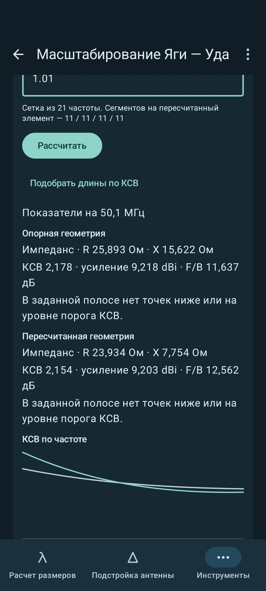
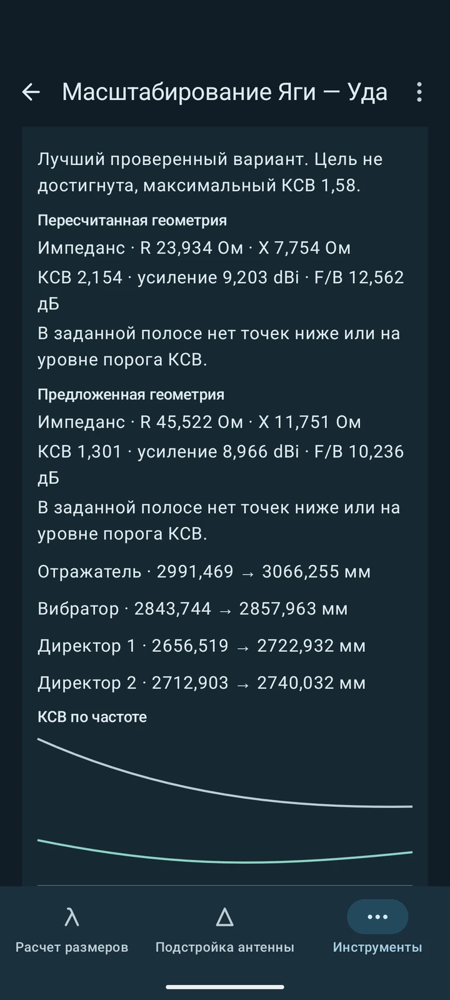
Используйте расчетные длины как стартовые. Перед подготовкой заготовок учтите влияние металлической траверсы и способа крепления, а для длинных трубок оцените жесткость. После пробной сборки измерьте КСВ в рабочей полосе и при необходимости подстройте согласование.
Подберите сетку и оцените чувствительность к разбиению
Откройте Инструменты → Дополнительные инструменты → Калькулятор сегментации Яги — Уда. Задайте частоту или полосу, положение, длину и диаметр каждого прямого круглого элемента и выберите вибратор. В примере DK7ZB при верхней границе 146 МГц получается по 11 сегментов на элемент. Источник выделен на шестом сегменте вибратора.
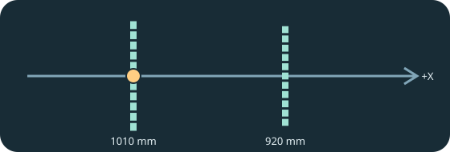
На экране масштабирования откройте Проверить в NEC → Сегментация модели, чтобы посмотреть или перенести разбиение каждой геометрии. Кнопка Сравнить две сетки показывает наибольшие различия R, X, КСВ, усиления и F/B по одной полосе. В каталоге Яги блок Геометрия для NEC поясняет ограничения модели и открывает опубликованный пример DK7ZB. На схеме сетки номера совпадают со строками таблицы, а точка отмечает источник напряжения. Справка показывает свободное пространство, идеальную землю и реальный грунт. Под схемами можно раскрыть сравнение для Яги DK7ZB на 145 МГц.
Для каждой серии проверка показывает максимальный КСВ среди рассчитанных частот и частоту этого максимума. В сравнении сеток отображается также максимум модуля разности комплексного импеданса |ΔZ| с его частотой. После сравнения двух геометрий или подбора кнопка Проверить изменение КСВ на двух сетках оценивает изменение худшего КСВ на каждой сегментации. Если оценки допускают и снижение, и рост либо включают ноль, приложение показывает Направление не определено. Диапазон показывает чувствительность расчетной модели к сегментации.
Таблица проверки показывает худший КСВ до и после шага, частоту каждого максимума и подписанное изменение для обеих сеток. Раскройте Изменение импеданса, чтобы увидеть максимум общего сдвига и максимум расхождения приращений на их частотах. На частоте максимального расхождения показаны ΔR и ΔX обеих сеток.
Просмотр моделей и чертежей
Проведите пальцем по векторной модели, чтобы повернуть ее. Двойное касание или лупа с плюсом открывает полный экран. Разведите пальцы для увеличения, переместите модель двумя пальцами. Лупа с минусом и системная кнопка «Назад» закрывают просмотр. В руководстве двойное касание или лупа также открывают фотографии и чертежи. Их можно масштабировать, перемещать и возвращать к исходному масштабу.
Траповый диполь
Откройте панель Конструкции и работа по диапазонам внизу экрана, чтобы прочитать справку о W3DZZ и работе на разных диапазонах. В панели Настройка по измерениям можно открыть S1P и анализировать КСВ в окне выбранного диапазона.
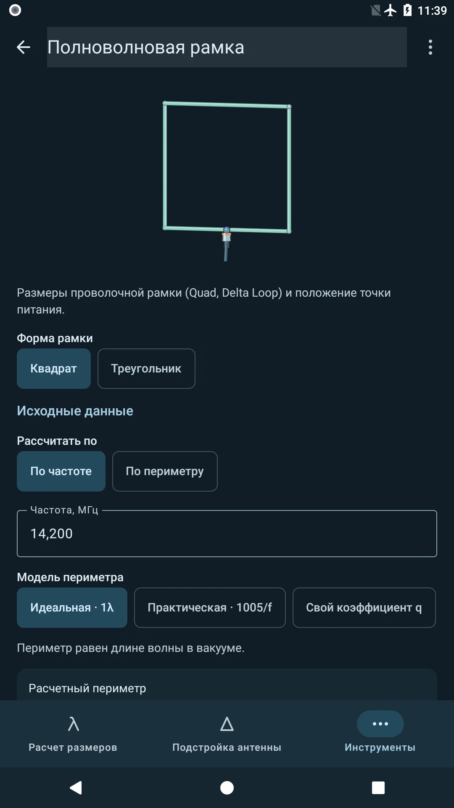

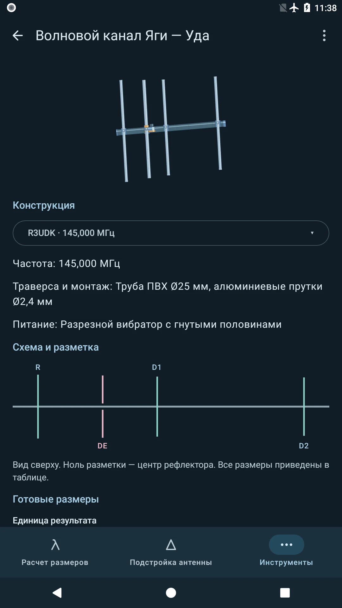
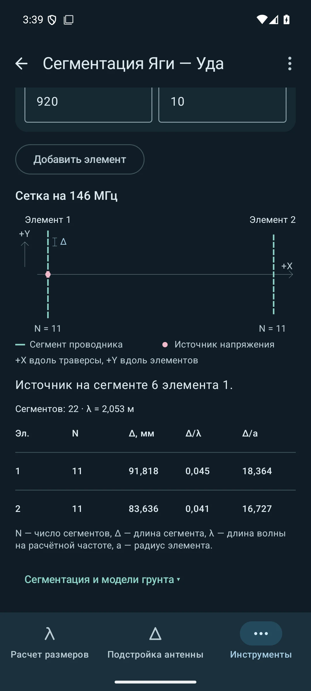
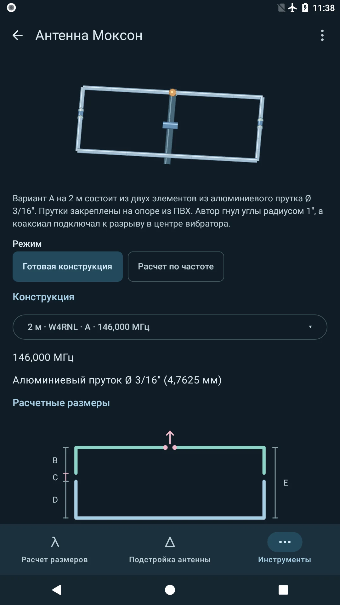

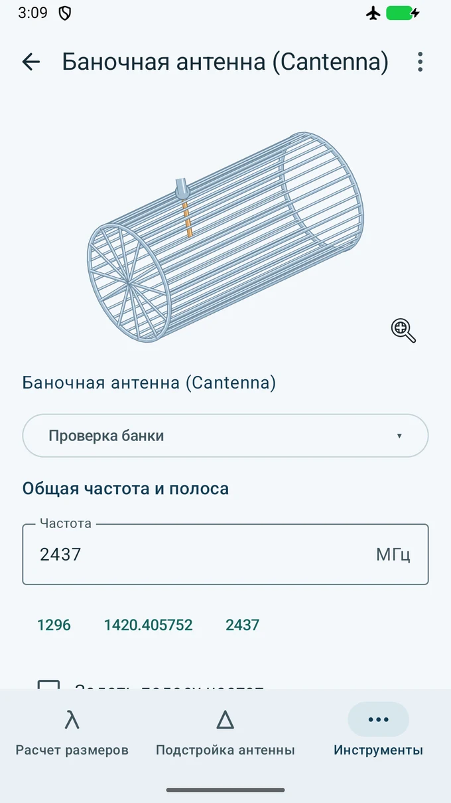

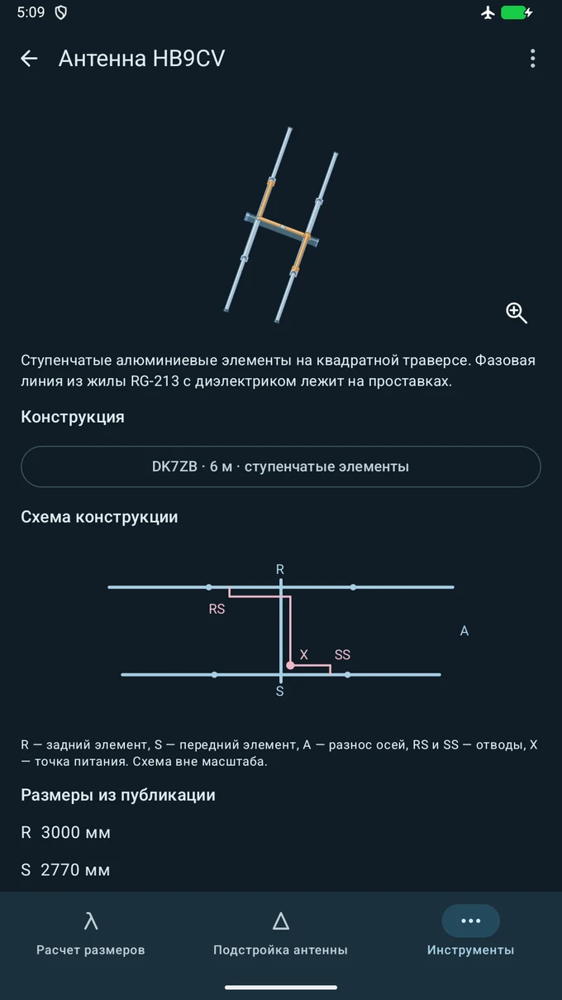

Конструирование волнового канала
Откройте Инструменты → Конструирование антенн → Волновой канал Яги — Уда. Откроется экран «Волновой канал». Здесь описана четырехэлементная антенна R3UDK на 145 МГц с разборным креплением и траверсой из ПВХ.
- Разверните Схема и размеры. Позиции отсчитываются от рефлектора. Для вибратора учитывайте габарит готовой детали и размер заготовки до гибки.
- В разделе материалов откройте иллюстрации креплений и при необходимости сохраните встроенный ZIP с файлами STL. Затем прочитайте шаги подготовки креплений, элементов, фидера и сборки.
- Для изменения припуска или отступов нажмите Открыть калькулятор R3UDK. Он открывает профиль этой конструкции.
- Чтобы сохранить исходную конструкцию, прокрутите руководство до конца и нажмите Добавить в проект. Можно выбрать существующий проект Яги или создать новый с целевой частотой 145 МГц. Из руководства сохраняются опубликованные размеры без дополнительного припуска и пользовательских отступов.
- После сборки проверьте КСВ и импеданс в рабочем положении. В разделе проверки можно перейти к импорту S1P.
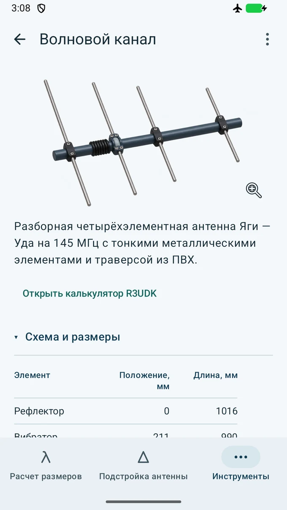
КСВ и отражение
На схеме падающая волна направлена к нагрузке, а отраженная — к источнику. Амплитуда отраженной волны пропорциональна |Γ|. При вводе схема обновляет известные величины и долю отраженной мощности.
- Откройте Инструменты → КСВ и отражение и выберите известную величину. Доступны КСВ, модуль коэффициента отражения |Γ|, возвратные потери и комплексный импеданс R + jX.
- При расчете по импедансу задайте опорное сопротивление. Для большинства 50-омных измерений это 50 Ом.
- Сверьте пересчитанные величины. При КСВ 2:1 отражается около 11,11% падающей мощности. Потери рассогласования в плоскости нагрузки составляют около 0,51 дБ при неизменной падающей мощности. Передатчик может снизить ее дополнительно.

Диаграмма Смита
- Откройте Инструменты → Диаграмма Смита и задайте импеданс нагрузки и опорное сопротивление.
- Перемещайте маркер нагрузки, чтобы увидеть изменения импеданса, КСВ и коэффициента отражения.
- Меняйте расстояние от нагрузки к генератору, чтобы проследить трансформацию импеданса вдоль линии. Круг отмечает нагрузку, ромб — выбранную точку вдоль линии.

Кабель и потери в фидере
Электрическая длина кабеля
Карточка «Электрическая длина кабеля» открывает экран «Длина кабеля». Задайте частоту, коэффициент укорочения кабеля и известную длину. Выберите направление пересчета между физической и электрической длиной. Фаза и задержка относятся к введенным параметрам линии.
Потери в фидере
Укажите частоту, длину и тип кабеля из каталога. При ручном вводе берите затухание для указанной частоты и проверяйте единицы, например дБ/100 м. Результат показывает потери в согласованной линии и мощность на дальнем конце. Полоса внутри кабеля сужается по мере снижения мощности. Нижняя шкала показывает долю мощности, дошедшую до выхода. Для оценки отражения откройте «КСВ и отражение». При смене частоты прежнее затухание остается в предварительном расчете. Сверьте его и подтвердите для новой частоты перед копированием. Если для рабочей частоты в паспорте нет значения, P₂ и шкала показывают результат на ближайшей опубликованной частоте. Статус «Справочно» и частота указаны рядом с P₂ и в результатах. Чтобы увидеть мощность в ваттах, введите входную мощность. Можно выбрать эту частоту кнопкой или ввести затухание для рабочей частоты вручную.
Максимальная длина фидера
На экране «Потери в фидере» выберите «Максимальная длина». Укажите рабочую частоту и модель кабеля либо введите затухание вручную с правильной единицей: дБ/100 м или дБ/100 футов. Затем задайте допустимые суммарные потери линии и потери соединений на этой частоте. Мощность необязательна: она нужна только для результата в ваттах.
В разделе «Иллюстрация» три кнопки: «Кабель», «Радиостанция — антенна», «График потерь». На графике линия потерь сопоставляется с заданным пределом. Это способы отображения одного расчета, а не разные модели.
Откройте «Формула и границы модели»: Lмакс = L₀ × (Aдоп − Aсоед) / α. Aдоп — допустимые суммарные потери, дБ; Aсоед — потери разъемов и других соединений, дБ; α — затухание кабеля на рабочей частоте на опорной длине L₀. L₀ равна 100 м для дБ/100 м или 30,48 м для дБ/100 футов. Результат — физическая длина; коэффициент скорости не нужен.
Например, при 6,3 дБ/100 м, допустимых потерях 3 дБ и потерях соединений 0,4 дБ максимальная длина после округления вниз составляет 41,26 м. Значение 3 дБ — пример, а не универсальная рекомендация. Длина округляется вниз до сантиметра; меньшие значения показаны в миллиметрах. Потери и мощность рассчитываются для показанной длины. Если затухание уже измерено вместе с разъемами, не прибавляйте их повторно.
Если потери соединений превышают предел, допустимой длины нет. Если они равны пределу и затухание положительно, допустима только нулевая длина. При нулевом затухании конечный предел моделью не определяется. Пустые обязательные поля не создают результат. Ближайшая паспортная частота и неподтвержденное ручное затухание дают только справочный результат: перед копированием выберите опубликованную частоту либо подтвердите затухание на рабочей частоте. Расчет не оценивает рассогласование, допустимую мощность кабеля и дальность связи. Переключение задач сохраняет прежнюю введенную длину.

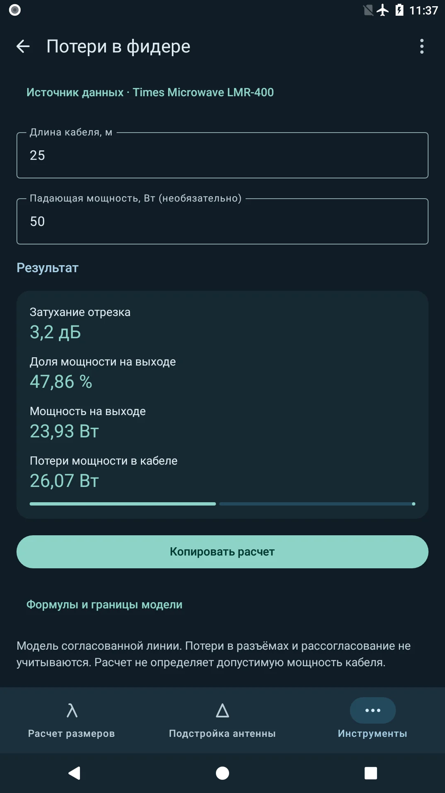
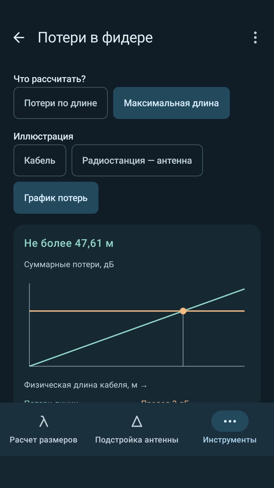
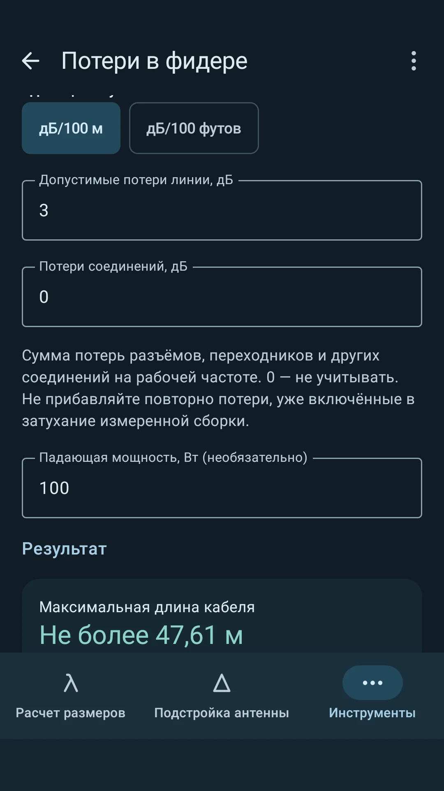
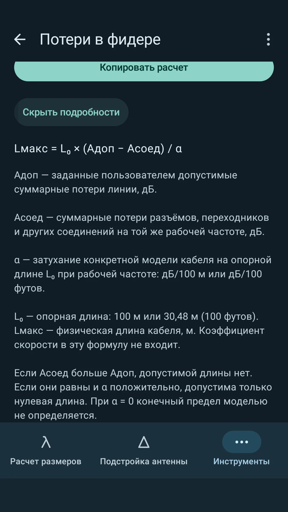
Измерения VNA и полоса по КСВ
-
Экспортируйте измерение S11 из анализатора в
однопортовый файл Touchstone
.s1p. - Откройте Инструменты → Дополнительные инструменты → Импорт измерений VNA анализатора и на экране «Измерения S1P» нажмите Открыть файл S1P.
- Укажите плоскость калибровки, например у точки питания или со стороны трансивера. Чтобы сравнить замеры, добавьте вторую трассу и проверьте частотное перекрытие, опорное сопротивление и плоскость калибровки. Если предупреждение указывает на разные частоты ближайших точек, проверьте частоты обеих трасс. Для каждой трассы используется свое опорное сопротивление.
- Просмотрите КСВ, импеданс и диаграмму Смита. На графике КСВ найдите минимум, а по реактивности проверьте, где она близка к нулю. Эти частоты могут различаться.
- В разделе Рабочая полоса по КСВ, доступном из «Измерений S1P» и дополнительных инструментов, выберите трассу и порог, например 2,0. Кнопками предыдущей и следующей частоты перемещайте маркер по измеренным точкам. Граница на краю прохода означает, что для определения полной полосы нужно расширить измерение. При входе из трапового диполя поиск ограничен выбранным диапазоном.
- Чтобы сохранить трассы с расчетом или замером, нажмите Сохранить в проект.
Если файл S1P не открывается, проверьте, что анализатор
экспортировал однопортовый файл Touchstone с расширением
.s1p.


Проекты и журнал подстройки
Поиск и порядок проектов
На экране Проекты введите до 32 символов названия, частоты или типа антенны в поле под кнопками. Список отфильтруется, а совпадения в карточках будут выделены желтым. Для частоты можно использовать запятую или точку. Нажмите крестик справа в поле, чтобы очистить поиск и показать все проекты.
Удерживайте карточку и перетащите ее вверх или вниз. Соседние карточки плавно раздвигаются и показывают место вставки. Когда вы отпустите карточку, приложение сохранит порядок. При активном поиске скрытые карточки сохраняют свои места.
Чтобы скопировать отдельное значение, формулу или фрагмент заметки, удерживайте текст, передвиньте маркеры выделения и нажмите «Копировать». Для полного отчета используйте кнопку копирования под результатами.
Создание и изменение проекта
В списке «Проекты» нажмите Новый проект. Введите название и выберите тип антенны. Целевую частоту, данные фидера и заметки можно заполнить позже. Для изменения параметров откройте проект и выберите Изменить проект в меню журнала.
Сохранение расчета
- Нажмите Копировать в проект в калькуляторе. В руководстве по сборке Яги кнопка называется Добавить в проект.
- Выберите подходящий проект и нажмите Сохранить в выбранный проект или выберите Создать новый проект и введите название.
Если калькулятор предлагает выбрать тип антенны, укажите его перед переходом к списку проектов. Поиск на экране сохранения действует среди подходящих по типу проектов. Если целевая частота проекта отличается, в записи сохранится частота расчета. При создании проекта из калькулятора сводка и первая запись журнала показаны под полем названия.
Откройте сохраненный расчет в журнале проекта. Исходные данные расчета и Результаты расчета показаны в двух таблицах. Подписи находятся слева, значения — справа.
Внизу записи нажмите Открыть в калькуляторе, чтобы загрузить сохраненный расчет в соответствующий инструмент. Восстанавливаются модель или опубликованная конструкция и записанные параметры. Изменение значений в калькуляторе не меняет исходную запись. Кнопка «Назад» возвращает к ней; повторный переход снова загружает сохраненные значения. Для записи замера переносятся только известные величины, а недостающие параметры нужно заполнить самостоятельно.
HTTPS-ссылки в данных и заметках записи, в том числе ссылки на исходные конструкции, подчеркнуты и открываются во внешнем браузере по нажатию. Они также доступны при сравнении записей. Текст записи и полный адрес ссылки можно выделить и скопировать.
В разделе «Изменения» разница указана в скобках: «+» означает увеличение относительно исходной записи, «−» — уменьшение. Если значения совпадают, показано «без изменений». Малые поправки длины отображаются в миллиметрах. Эти обозначения сохраняются при копировании данных. Недоступная разница не считается отсутствием изменений.
Замеры и перенос данных
- Откройте нужный проект и нажмите Новая запись в журнале. Выберите тип записи. Для ручного замера укажите частоту замера, КСВ, опорное сопротивление Z₀, активную и реактивную части импеданса и точку подключения, если они известны.
- Отметьте две записи в журнале и нажмите Сравнить записи. Доступные поля зависят от пары. Например, расчет Cantenna можно сопоставить с трассой S1P. Две трассы сравнивайте в инструменте «Измерения S1P». Для прямого сравнения замеров проверьте частоту, Z₀ и плоскость калибровки.
- В журнале откройте раздел Ваши фото. Нажмите на снимок, чтобы просмотреть его, изменить комментарий или сохранить отдельно. Экспортировать все сохраняет снимки и комментарии в ZIP.
- Для переноса проекта используйте Экспорт JSON и Импорт JSON. При импорте создается отдельный проект. JSON хранит сведения о трассах, поэтому исходные файлы S1P и архив с фотографиями переносите отдельно.

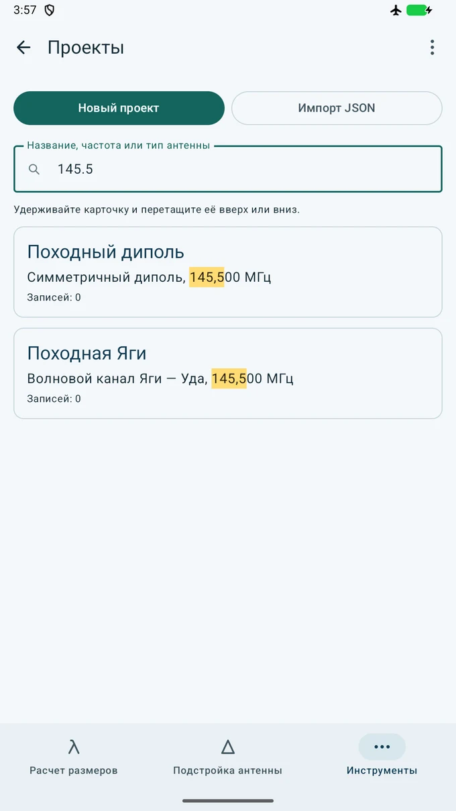


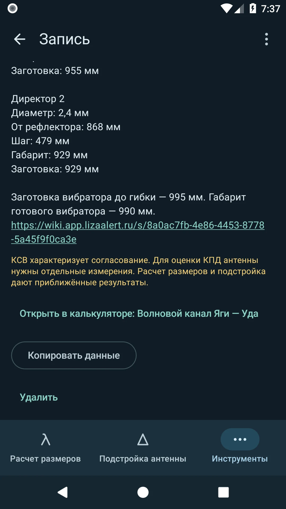